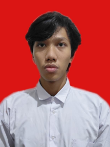

Halo! Saya Adhitya Firmansyah, seorang mahasiswa yang sedang menempuh pendidikan di Universitas Siber Asia. Saya memiliki minat yang besar dalam dunia teknologi. Saya telah mempelajari berbagai bahasa pemrograman seperti HTML, CSS, dan JavaScript, Sofware Burp Suite dan beberapa tools lainnya. Saya sangat antusias untuk terus belajar dan berkembang dalam bidang ini.
Dan juga saya memiliki minat dalam mempelajari teknologi tentang keamanan komputer di dunia digital mempelajari celah keamanan dan cara melindungi sistem dari ancaman cyber. meliputi kerentanan sistem website dari kerentanan XSS, BAC, IDOR, SQL Injection.
| Jenjang | Institusi | Tahun |
|---|---|---|
| SDN | SDN Paseban 18 Pagi | 2013 - 2019 |
| SMP | SMP Negeri 118 Jakarta | 2019 - 2022 |
| SMA | SMK Negeri 34 Jakarta | 2022 - 2025 |
| No | Makanan | Minuman |
|---|---|---|
| 1 | Nasi Goreng | Es Teh |
| 2 | Mie Ayam | Es Jeruk |
| 3 | Bakso | Es Campur |
Game
Gym
Kreator